Computer Science Educator
I'm a computer science educator located in the South San Francisco Bay Area.
I've created a cellular automata encryption generator that allows users to learn about CA Encryption techniques in a visual manner. The python and javascript code can be found here. It allows the user to input any CA rule (mod 256) and set output preferences. If you want to see the generator in action, click here.
redditgifts map is a web application that uses Google's Map API to generate a visual representation of all giftees a redditgifts user has sent gifts to. After creating his or her map, the user can generate both private and share links to refer to it later. Check it out here.
As an undergraduate, I worked with Professor Phill Conrad on the Awesome library. Why "Awesome?" It's a Discrete Math library, but it's the exact opposite of DisMaL. I primarily worked with javascript to automate question generation. This will allow students to self-study various problems related to Discrete Math, such as set operations and relation classification.
For more information, check out my website.